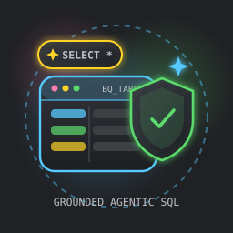
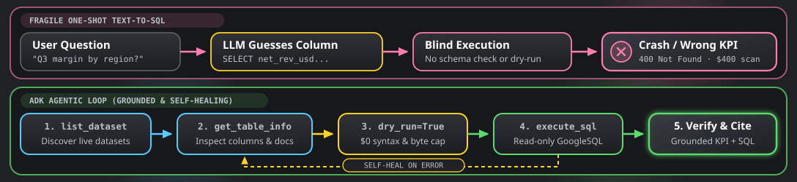
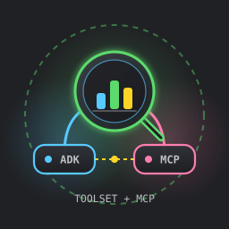
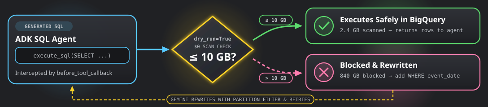
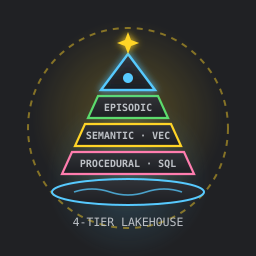
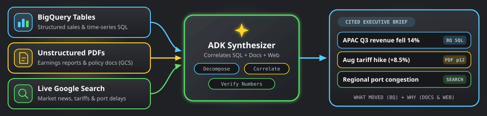
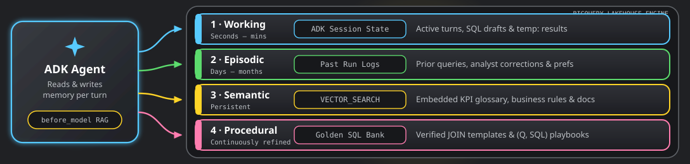
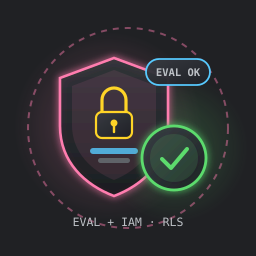
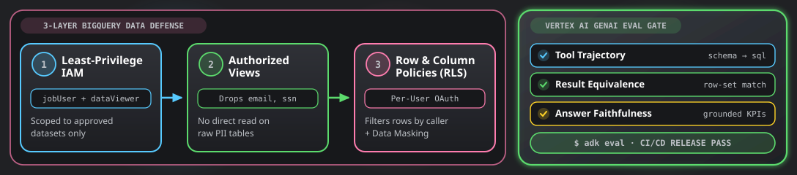
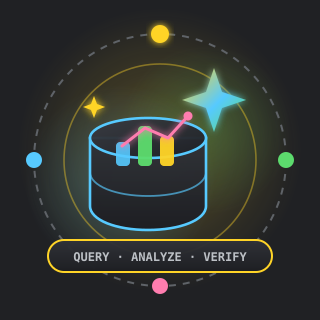

BigQuery
BigQuery ADK
ADK MCP
MCP
 Google Developer GroupBangkok · DevFest 2026
Google Developer GroupBangkok · DevFest 2026Agenda
- 01Why data agents failClassic Text-to-SQL traps & how ADK fixes them
- 02BigQueryToolset & MCPBuilt-in tools, Cloud Run MCP & cost guardrails
- 03Blending data & memoryMulti-source analytics, 4-tier memory & semantics
- 04Evaluate & secureVertex AI GenAI Eval, IAM, RLS & checklist

Why data
agents fail
Classic Text-to-SQL traps &
how ADK fixes them
Four ways naive Text-to-SQL breaks in production
Hallucinated schemas
Invents columns like net_rev_usd or joins the wrong table because the model never inspected live metadata.
Missing business definitions
"Active customer" or "churn" varies by team. SQL compiles cleanly, yet returns a silently wrong KPI.
Runaway TB scans
One unpartitioned SELECT * across a multi-terabyte event table burns hundreds of dollars from a single chat turn.
Destructive DML / DDL
Unconstrained SQL execution lets a prompt injection or model slip run DELETE, UPDATE, or DROP TABLE.
From one-shot SQL generation to an agentic loop
ADK
BigQuery

get_table_info prevents hallucinated columns.dry_run=True catches TB scans before billing.Three pillars ADK brings to BigQuery analytics
1 · Discovery loop
Agent inspects live datasets, columns, descriptions & partitions before writing a single line of SQL—and retries when errors occur.
2 · Deterministic guards
WriteMode.BLOCKED stops DML/DDL in code, while before_tool_callback enforces dry-run byte caps and row limits.
3 · Built-in evaluation
Score tool trajectories, SQL result equivalence, and answer faithfulness with adk eval and Vertex AI GenAI Eval.


Anatomy of a production ADK data agent
Caller & Context
User question
OAuth / IAM identity
Session & state
ADK LlmAgent
Gemini 2.5 Pro / Flash reasoning
BigQueryToolset / MCP
Schema, GoogleSQL, AI.FORECAST, Insights
 External Sources
External Sources
PDFs / GCS docs, Google Search, enterprise APIs
 Governance & Memory
Governance & Memory
IAM + Authorized Views + RLS + BQ Vector Memory

BigQueryToolset
& MCP
First-party ADK tools,
MCP on Cloud Run & cost guards
Connect BigQuery in 15 lines with BigQueryToolset
 Python
ADK
BigQuery
Python
ADK
BigQuery
import google.auth
from google.adk.agents import LlmAgent
from google.adk.tools.bigquery import (
BigQueryCredentialsConfig, BigQueryToolset,
)
from google.adk.tools.bigquery.config import (
BigQueryToolConfig, WriteMode,
)
creds, _ = google.auth.default()
bq_tools = BigQueryToolset(
credentials_config=BigQueryCredentialsConfig(
credentials=creds
),
bigquery_tool_config=BigQueryToolConfig(
write_mode=WriteMode.BLOCKED,
compute_project_id="my-analytics-proj",
),
)
data_agent = LlmAgent(
name="bq_analyst",
model="gemini-2.5-pro",
instruction="Always inspect schemas before querying.",
tools=[bq_tools],
)
First-party in ADK
Ships insidegoogle-adk. No custom SQL execution wrappers or schema formatters to maintain.WriteMode.BLOCKED
Default read-only mode rejectsINSERT, UPDATE, DELETE and DDL. Also supports PROTECTED (temp tables) and ALLOWED.Flexible credentials
Use ADC, Service Account, or per-user OAuth2 so BigQuery enforces the caller's own IAM.What comes out of the box in BigQueryToolset
BigQuery
TimesFM & AI
Discover datasets available in the project, paired with get_dataset_info for descriptions & labels.
Inspect column names, types, descriptions, partitioning & clustering (with list_table_ids).
Run validated GoogleSQL queries while enforcing write_mode, project billing & location.
Run BigQuery ML AI.FORECAST (TimesFM) for zero-shot time-series forecasting directly in SQL.
Delegate natural-language analytics to BigQuery's Conversational Analytics API over configured tables.
Find the right tables across large enterprises using Dataplex Universal Catalog metadata search.
tool_filter=["list_table_ids", "get_table_info", "execute_sql"] to expose only what the agent needs.BigQueryToolset vs BigQuery MCP on Cloud Run
ADK
MCP
 Cloud Run
Cloud Run
| Dimension | ADK BigQueryToolset | BigQuery MCP on Cloud Run |
|---|---|---|
| Runtime | In-process inside your ADK Python service | Remote HTTP MCP server (e.g. MCP Toolbox for Databases) |
| Client reuse | ADK agents in the same codebase | Any MCP client: ADK, Gemini CLI, IDEs, partner agents |
| SQL governance | Dynamic SQL + schema discovery + callbacks | Pre-approved parameterized SQL (tools.yaml) or ad-hoc |
| Credentials | Agent holds BQ credentials or user OAuth | Isolated in Cloud Run SA; agents only call HTTPS + IAM |
| Best for | Exploratory analytics & fast single-team builds | Shared enterprise data tools owned by a platform team |
BigQueryToolset; graduate to MCP on Cloud Run when multiple teams share governed queries.Consume governed BigQuery MCP tools from ADK
MCP
Cloud Run
IAM
from google.adk.agents import LlmAgent
from google.adk.tools.mcp_tool import (
McpToolset,
StreamableHTTPConnectionParams,
)
bq_mcp = McpToolset(
connection_params=StreamableHTTPConnectionParams(
url="https://bq-mcp-svc-xxx.run.app/mcp",
headers={"Authorization": f"Bearer {id_token}"},
),
tool_filter=[
"get_quarterly_revenue",
"top_customers_by_region",
],
)
finance_agent = LlmAgent(
name="finance_analyst",
model="gemini-2.5-flash",
tools=[bq_mcp],
)
MCP Toolbox for Databases
Google's open-source server runs on Cloud Run with connection pooling, auth & OpenTelemetry built in.Zero SQL hallucination
Define vetted parameterized SQL intools.yaml so finance KPIs always run the exact approved query.Decoupled security
Cloud Run IAM gates who can invoke the server; BigQuery IAM stays scoped to the server's service account.Stop runaway TB scans with a dry-run callback
Callback
dry_run

MAX_BYTES = 10 * 1024**3 # 10 GB cap per query
bq = bigquery.Client()
def dry_run_guard(tool, args, tool_context):
if tool.name != "execute_sql":
return None
cfg = bigquery.QueryJobConfig(dry_run=True, use_query_cache=False)
job = bq.query(args["query"], job_config=cfg)
if job.total_bytes_processed > MAX_BYTES:
gb = job.total_bytes_processed / 1024**3
return {"error": f"Blocked: scans {gb:.1f} GB (cap 10 GB). Add partition filter."}
return None # safe to execute
$0 pre-flight check
dry_run=True validates syntax & exact bytes scanned for free.Self-correcting retry
Error dict prompts Gemini to addWHERE event_date >= ....Defense in depth
Pair withmaximum_bytes_billed & project custom quotas.
Blending data
& memory
Multi-source analytics,
4-tier memory & semantics
Data Analyst Agent: blend PDFs, Search & BigQuery
BQ
GCS
Search
ADK

BigQueryToolset.google_search grounds real-time external signals.Split complex analysis into specialist sub-agents
1 · Planner
Breaks question into SQL tasks & doc lookups
2 · SQL Agent
Owns BigQueryToolset & dry-run guard
3 · Research Agent
Owns PDF RAG & google_search
4 · Synthesizer
Reconciles numbers & writes cited brief
When to stay single-agent
Fewer than ~8 tools, single domain, low latency priority. Simpler to trace and debug.When to split into sub-agents
Mix Gemini Flash (routing/search) with Gemini Pro (SQL), isolate prompts, and run ParallelAgent for speed.4-tier agent memory architecture on BigQuery Lakehouse
Session
Vector

temp: state.VECTOR_SEARCH KPIs.Eliminate metric drift with a semantic layer
BigQuery
Looker
Prompt: "What is Q3 Net Revenue?"
SUM(gross_amount) from raw orders — forgets refunds, test accounts & FX conversion.
mart.v_net_revenue_usd where refunds, internal orders & currency rules are pre-verified.
DESCRIPTIONs and Dataplex tags; get_table_info feeds them directly to Gemini.(question, sql) pairs via VECTOR_SEARCH to anchor complex aggregations.Retrieve golden SQL in before_model_callback
Python
ADK
Gemini
def inject_golden_sql(callback_context, llm_request):
user_q = callback_context.user_content.parts[0].text
# Query BigQuery VECTOR_SEARCH over verified Q->SQL
hits = search_verified_sql(user_q, top_k=3)
if hits:
examples = "\n\n".join(
f"Q: {h['question']}\nSQL:\n{h['sql']}"
for h in hits
)
llm_request.config.system_instruction += (
"\n\nVerified SQL patterns for reference:\n"
+ examples
)
return None # call Gemini with enriched instructions
Dynamic few-shot RAG
Injects only the 3 closest verified SQL patterns per question—accurate without bloating the prompt.Continuous flywheel
When analysts approve a new query, embed and append it to the BigQuery golden table—no code redeploy.Scales to 100s of KPIs
Keep domain definitions in BigQuery tables instead of hardcoding rules inside Python strings.
Evaluate
& secure
Vertex AI GenAI Eval, IAM,
RLS & production checklist
Evaluate with ADK + Vertex AI GenAI Eval Service
adk eval
Vertex AI
Did it call get_table_info before execute_sql? Score via tool_trajectory_avg_score.
Execute both generated and golden SQL; compare result sets—not raw SQL text.
LLM-as-a-judge checks that every number in prose matches actual BigQuery rows.
Track bytes scanned per turn, SQL self-heal loops, and p95 end-to-end latency.
Enforce security in BigQuery, never in prompts
IAM
RLS
Eval

1 · Least-Privilege IAM
Grant jobUser + dataViewer only on approved datasets.
2 · Authorized Views
Drop PII columns (email, ssn) without raw table access.
3 · Row & Column RLS
ROW ACCESS POLICY + per-user OAuth filters rows automatically.
Production checklist for ADK + BigQuery agents
- ✓Default to
WriteMode.BLOCKEDunless writes are explicitly scoped to a sandbox dataset. - ✓Cap query spend with a
dry_run=Truecallback,maximum_bytes_billed& partition filters. - ✓Trim tool output in
after_tool_callback(enforceLIMIT/ row cap) to avoid context overflow. - ✓Document schemas and use
tool_filterso Gemini sees clean metadata and minimal tools.
- ✓Gate releases with
adk evalon 20–50 golden questions whenever prompts or views change. - ✓Audit every query — log caller, SQL, bytes scanned & latency to BigQuery / Cloud Trace.
- !Never use prompts for access control — enforce IAM, Authorized Views & RLS in BigQuery.
- !Don't point agents at raw staging tables — expose governed semantic views instead.
Query, Analyze, Verify
1 · Query
Use BigQueryToolset (WriteMode.BLOCKED) or MCP on Cloud Run with dry-run byte caps.
2 · Analyze
Blend BigQuery with PDFs & Search; ground metrics with semantic views and 4-tier memory.
3 · Verify
Score result sets with ADK + Vertex AI Eval; enforce IAM, Authorized Views & RLS in BigQuery.
BigQueryToolset(write_mode=WriteMode.BLOCKED) at one documented dataset and add a dry-run callback.Docs & hands-on codelabs
ADK BigQuery Tools Docs
adk.dev/tools/google-cloud/bigquery/Codelab: Data Analyst Agent
Blend PDFs, Search & BigQuery datasetsBuild & Evaluate BigQuery Agents
Codelab: ADK + Vertex AI GenAI EvalLong-Term Agent Memory in BQ
Codelab: 4-tier Lakehouse memoryBigQuery MCP on Cloud Run
Codelab: MCP Toolbox + Cloud Run + ADKMCP Toolbox for Databases
googleapis.github.io/genai-toolbox/Thank you
Q & A
Punsiri Boonyakiat
Google Developer Expert in Cloud AI
